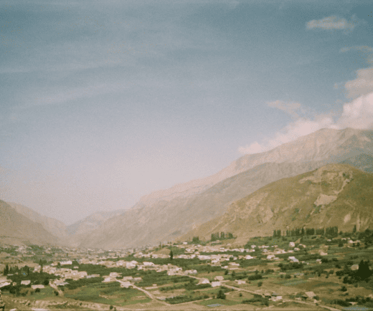

СВЯЖИТЕСЬ СО МНОЙ
ДЛЯ РЕАЛИЗАЦИИ ВАШИХ ИДЕЙ
ОСТАВИТЬ ЗАЯВКУ
ПОМОГУ ЗАПЕЧАТЛЕТЬ КАЖДЫЙ
МОМЕНТ С ПОМОЩЬЮ ФОТОГРАФИИ
И ВИЗУАЛЬНОГО ПОВЕСТВОВАНИЯ

В своей работе я использую как пленочные, так
и цифровые камеры, что позволяет мне сочетать
традиционные методы фотографии
с современными технологиями.

Мой стиль работы основан на гармоничном сочетании этих
двух подходов, что позволяет создавать фотографии
с глубоким эмоциональным содержанием
и высококачественной детализацией.